智轨新脉：京张人字线 · 百年AI创新带总体城市设计
以京张铁路“人字形”展线为空间母题，提出“京张人字线 · 智脉共生带”总体概念：一条南北主脊、两翼、三处重点区、三处朝圣地标与12张AI场景卡。V3 增设独立评委首读册、遗产—服务—治理四重规则、概念性慢行锚点、AI 场景驿站服务蓝图、包容性用户旅程与可退出决策门。全部几何基于 provisional boundary 生成并在 EPSG:4548 下复算；数字服务不接入真实个人数据，正式资料发布后整包重算。
智轨新脉：京张人字线 · 百年AI创新带总体城市设计
设计依据与资料清单
本 formal 方案以北京市规划和自然资源委员会海淀分局发布的《百年京张AI创新带城市设计国际方案征集资格预审公告》为第一依据，并以 brief/site-package/ 中经维护者登记的临时粗略边界、重点区域、枚举、指标和来源清单为机器可读依据 来源 来源。AI agent 生成方案前读取了 design_brief.json、allowed_design_space.json、sources.json、enums/、ranges/、schemas/、data/source_registry.json 与 data/processed/agent_fact_pack.md，并用 project_scope_summary.csv、agent_task_requirements.csv、source_use_matrix.csv、missing_data_checklist.csv 建立任务、范围、资料用途与缺口清单 来源。
资料登记表的使用边界如下 来源：
data/source_registry.json登记公开、清权与临时资料的用途边界；agent 不得把 background_only 或 provisional_only 资料升级为 official boundary、法定控规、正式评分依据或政府实施承诺。- 临时边界与三处重点区 polygon 取自
brief/site-package/geometry/provisional_boundaries.geojson，仅用于方案生成、自检与可视化 来源 来源，非 official redline、审批依据或精确面积依据 深度。
方案不是独立愿景文本，而是从公告、面向智能体任务书和场地资料出发组织的可复核成果：空间结论落回 GeoJSON，绩效结论落回指标表，专业判断落回标准矩阵与设计深度矩阵 标准 标准。本节只把最关键依据放在判断旁边；完整索引保存在 sources.json、standard_matrix.json 与 design_depth_matrix.json。
本次生成的可评分状态为：临时边界，保留精度警示并待正式数据发布后复算；不阻断内容评分。当官方边界和重点区 polygon 更新后，agent 必须重新运行几何生成、指标复算、自检、图纸与 HTML 生成，不能只替换单个文件。边界解释可回到总体范围图层和面积复算 空间数据 指标；三处重点区则由独立图层与数量指标核对 空间数据 指标。
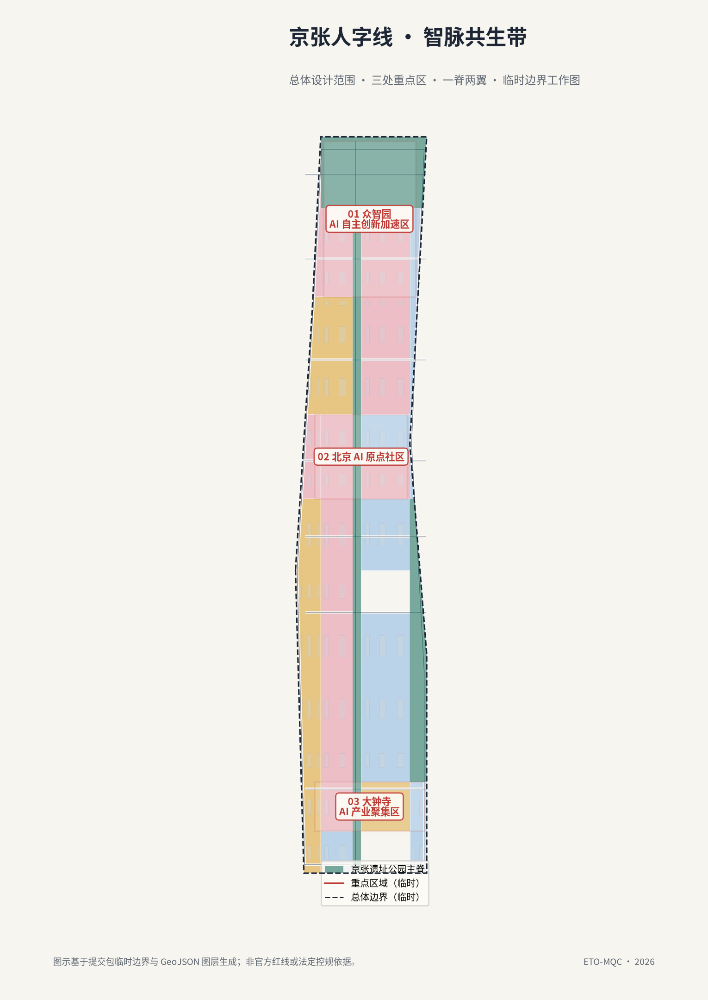
三层范围工作框架
方案按照公告确定的三个层次组织工作 标准：统筹研究范围关注约 43.6 平方公里的 AI 产业生态、战略定位、创新链与未来城市形态；总体设计范围关注约 11.4 平方公里的京张遗址公园周边 1–2 公里城市地区和产业区，要求形成城市更新总体框架、产业空间布局、交通市政支撑与城市风貌控制 指标；重点区域范围关注约 369 公顷三处详细设计地区，要求明确功能业态、建筑规模、拆改留分类、公共空间连通与交通组织 指标。三层范围在 compliance_matrix.json 中逐条映射，保证公告 1.3、1.4、1.5 与 agent.1–agent.6 的必选任务都有章节、图层、指标、图纸与 HTML 证据 深度。
三层工作不是互相割裂的图纸集合。统筹研究决定产业链与城市形态判断，总体设计把判断落实到更新项目、空间结构与设施承载，重点区域详细设计验证具体地块、建筑、交通、公共空间与 AI 应用场景的可实施性 深度。agent 生成方案时先锁定当前提交采用的 provisional 边界与约束，再生成用地、建筑、道路、绿地、公共空间、分期与 AI 服务节点，最后从这些图层复算指标并在正文解释哪些结论仍受 provisional boundary 限制 空间数据。
| 层级 | 设计问题 | 方案回答 | 数据落点 |
|---|---|---|---|
| 统筹研究范围 | AI 产业生态与未来城市形态如何组织 | 建立“高校策源—开源协作—企业转化—公共体验—国际传播”创新链与“人字线”空间母题 | compliance_matrix.json、standard_matrix.json |
| 总体设计范围 | 产业空间、城市更新、交通市政与风貌如何落图 | 用地、建筑、道路、绿地、公共空间与分期图层共同表达 | 空间数据、空间数据 |
| 重点区域范围 | 三处片区如何达到详细设计深度 | 分别提出定位、空间动作、AI 场景与实施依赖 | 空间数据、空间数据、空间数据 |
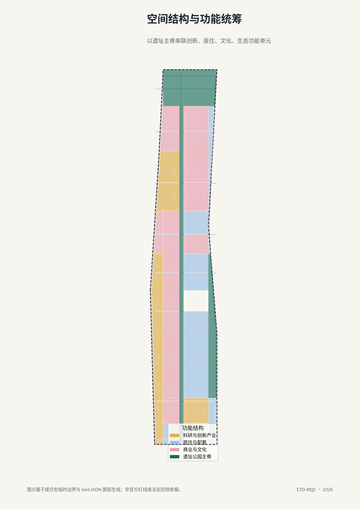
三层范围工作框架的深度项由 深度 与 深度 约束，空间证据以 空间数据 与 空间数据 为准，任务依据以 标准 为准，范围索引以 来源 中 project_scope_summary.csv 的三层范围表为导航。
项目背景与现状诊断
京张铁路是中国自主建设的第一条干线铁路，1909 年建成通车，其“人字形”展线（青龙桥段）是詹天佑为克服八达岭坡道设计的经典工程，也被视为中国近代工程精神与自主创新精神的象征 深度。2019 年京张高铁开通后，既有地上线转入遗址化，形成贯穿海淀南北的线形开放空间与更新走廊；本次征集范围以京张铁路遗址公园为纽带，联动高校、园区、企业和社区，探索面向 AI 时代的城市形态。命名提案“智轨新脉：京张人字线”即建立在这一历史原型之上：把百年前“人字形”展线转译为面向 AI 的“人字线”空间母题，既延续“自主创新、攻坚克难”的京张精神，也回应“世界级 AI 创新生态、全栈自主创新、AI+ 场景赋能”的征集任务 标准。
现状诊断（基于公开资料与临时边界内空间复核）：
- 海淀区是全国 AI 产业高地，集聚高校院所、头部企业、算力算法数据要素与科技服务资源；本带紧邻高校、科研机构与成熟科技园区，具备“策源—转化—应用”完整链条的基础条件 来源。
- 京张遗址公园已部分建成，是公众活动的线性公共空间，但南北贯通性、东西缝合性与周边园区、社区的步行联系仍有提升空间；跨北五环等节点存在慢行断点。
- 三处重点区（众智园、AI 原点社区、大钟寺）功能差异明显，但彼此之间及与中关村、小月河之间的创新协同回路尚未充分建立；大钟寺站等轨道枢纽的站城一体化潜力尚未充分释放。
- 本方案以临时边界栅格切分生成无缝隙用地分区、104 幢概念建筑基底与 39.4 km 道路中心线 空间数据 空间数据 空间数据；对应面积与长度指标见指标表 指标 与 指标，作为总体设计讨论的量化底板；现状与未来均待官方数据发布后复核。
资料缺口（公开数据缺口，不阻断内容评分）：官方精确边界 polygon、三处重点区 official polygon、法定控规条件（容积率、高度、密度、绿地率、退线与道路红线）、现状建筑权属、市政管线与文保范围均未在公开场地包中取得，相关结论一律以临时/待确认标注，并列入 assumptions.json 与 missing_data_checklist.csv 来源 深度 指标。
总体概念与功能统筹方案
本方案的总体概念为“京张人字线 · 智脉共生带”：以京张遗址公园为南北主脊，形成一条贯通全带的“AI 创新中轴”；以 AI 原点（人字顶点）为锚，向两侧展开“中关村科技服务翼”与“小月河场景赋能翼”，形成与百年前人字形展线同构的空间母题；三处重点区作为“三站”，沿主脊自北向南布局，承担自主创新、生态人才与智能原生业态三种功能；沿线布置 12 处 AI 场景驿站与三处朝圣地标，构成“一带、三站、两翼、多点”的总体结构 来源 深度。
“一带”不是额外画出的新红线，而是把公告三层范围转译为工作方法；“三站”对应三处重点区域；“两翼”对应中关村与小月河两大创新资源；“多点”对应 AI+ 公共服务、产业服务和城市生活的可运营节点 标准。功能统筹上，全带划分为科研产业、商业服务、教育文化、公园绿地、防护绿地、广场与留白等主导类型，形成“北研—中创—南业”的功能序列，并由用地图层闭合表达 空间数据 空间数据 指标。
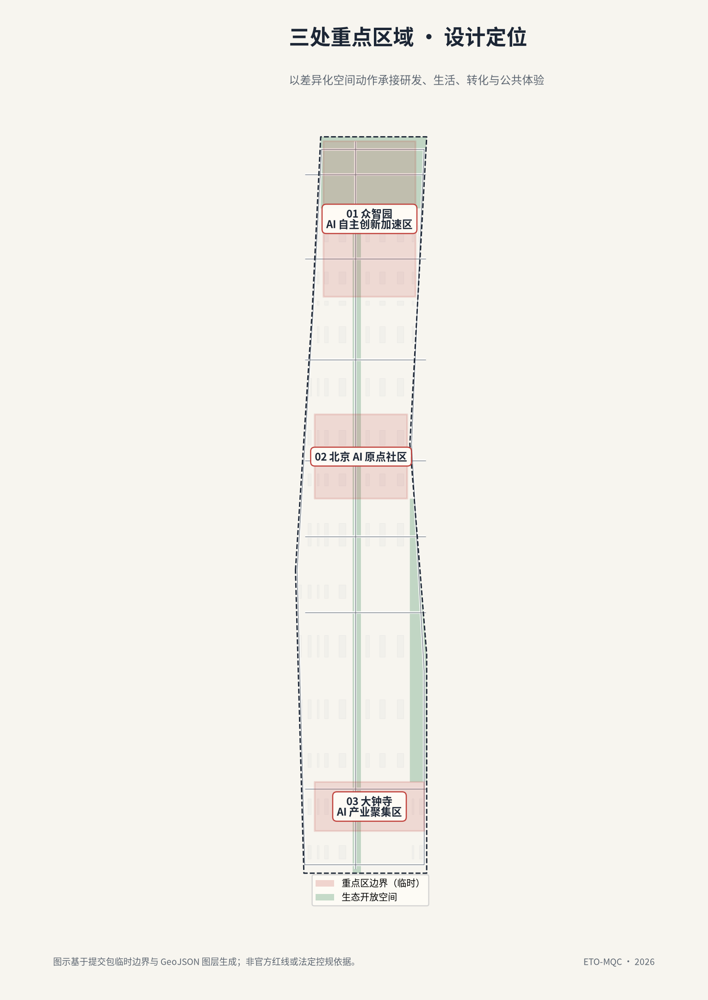
命名与视觉识别：主标识“人字线”取詹天佑展线之形，两条展翼构成稳定的“A/AI”意象，代表“自主（Autonomy）与智能（AI）”双螺旋；辅助图形以铁轨枕木与电路走线同构的连续线描表达“历史之轨—数字之脉”。该命名与 logo 为 AI agent 概念提案，商标、字体与图像须经清权后方可公开使用 来源 深度。
统筹研究范围产业与未来城市研究
统筹研究范围是本次设计的第一层级，约 43.6 平方公里，关注产业与未来城市研究 标准 深度。产业研究回答“海淀 AI 产业如何组织创新链”与“面向智能体任务书要求的世界级 AI 创新生态如何落地”两个问题，未来城市研究回答“人工智能将如何改变工作、生活、社交、学习、交通与公共服务”的命题。方案提出“高校策源—开源协作—企业转化—公共体验—国际传播”的创新链框架，并将其转化为与“人字线”空间结构叠合的产业空间布局：主脊串联策源与展示功能，两翼分别承接科技服务（西翼）与场景赋能（东翼），三处重点区承载自主创新、生态人才与智能原生业态 来源 深度。未来城市形态研究的结论以可定位的功能区、节点、廊道与场景表达，并用 compliance_matrix.json 把官方任务 1.3 映射到本层证据 标准。
世界级AI创新生态体系
统筹研究范围的核心任务是构建世界级 AI 创新生态体系 标准。方案梳理海淀高校院所、头部企业、算力算法数据要素、孵化平台、上市企业、独角兽与科技服务资源，提出 AI 创新链、产业链、人才链和城市服务链的空间协同框架：“高校策源—开源协作—企业转化—公共体验—国际传播”。该框架与“人字线”空间结构叠合：主脊串联策源与展示，两翼分别承接科技服务（西翼）与场景赋能（东翼），形成可定位的创新功能区、节点、廊道与场景，而非泛泛描述技术愿景 深度。
生态体系落地为三处重点区的差异化定位与沿线创新服务设施：
- 众智园AI自主创新加速区承担“全栈自主 + 治理话语权”，配置自主模型训练评测、安全治理展示、标准共建与开源协作空间 空间数据。
- 北京AI原点社区承担“世界级生态 + 人才原点”，围绕人字顶点布置成果发布、人才服务、开源社区与校区园区缝合 空间数据。
- 大钟寺AI产业聚集区承担“智能原生新业态 + 国际交往”，布局大模型原生应用、智能终端体验、数据要素会客厅与国际路演 空间数据。
三处重点区合计约 369 公顷 指标，沿线设置 8 处 AI 场景驿站与 12 张 AI 场景卡 指标，并以 5 类用户画像 指标 校验空间需求是否落到公共空间、慢行与绿地图层 空间数据 空间数据 空间数据。
未来城市形态研究应回答人工智能如何改变工作、生活、社交、学习、交通与公共服务。方案把 AI 交通系统、连续绿色空间、创新服务设施和国际化生活工作氛围落实为可定位的功能区、节点、廊道和场景，并把 AI 创新指数、人才密度、空间供给类型与 AI+ 垂直应用重点区域写入指标体系，标明哪些是官方、哪些是设计建议、哪些仍待正式数据校准。若提出全球 AI 创新活动、开发者社区、开放场景或朝圣路线，均写为“概念建议/参考方案/可供专业团队深化研究”，不写成已经确定的政府活动或实施安排 深度 深度。
品牌识别体系以“京张人字线 · 智脉共生带”为概念性核心标识；可查的 Logo、标准字、标准色与导视、通行证、数字平台、年度活动原型已形成在 assets/identity/，见下图。标志以京张铁路的“人”字展线作为几何骨架：轨道蓝表示历史工程基因，主脊绿表示连续公共生态空间，信号橙表示可见的智能服务接口，原点红表示需要人工确认的 AI 公共节点。它不是政府徽标、注册商标或已获授权的合作品牌；任何公共实施前仍应完成商标检索、导视审批和权利清理 深度 深度。
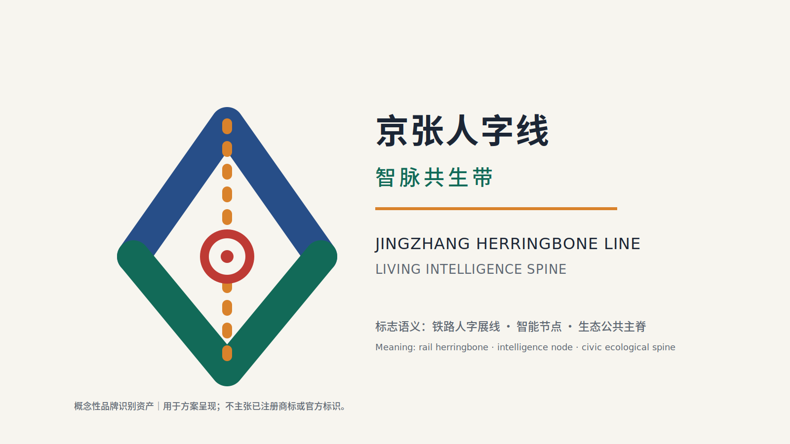
| 识别要素 | 交付物与规则 | 应用边界 |
|---|---|---|
| 标志与标准字 | logo-lockup.svg/png；中英文锁定组合为“京张人字线 · 智脉共生带 / Jingzhang Herringbone Line · Living Intelligence Spine”。 | 仅为概念提案视觉资产，不表示官方身份或商标权。 |
| 标准色 | Rail Blue #274E88、Spine Green #126A58、Signal Orange #D9822B、Node Red #BE3A34、Warm Paper #F7F5EF。 | 导视、公共家具、网页与活动物料保持高对比；安全信息不得只靠色彩区分。 |
| 导视与无障碍 | 双语“AI 场景驿站”原型，保留人工咨询、无障碍、实时导览提示。 | 需符合现场交通、无障碍和广告管理要求后落地。 |
| 数字与活动应用 | “智脉通行证”、场景开放平台、年度 AI 周视觉原型。 | 不收集或利用个人轨迹；活动名称、合作品牌与数据接口须另行授权。 |
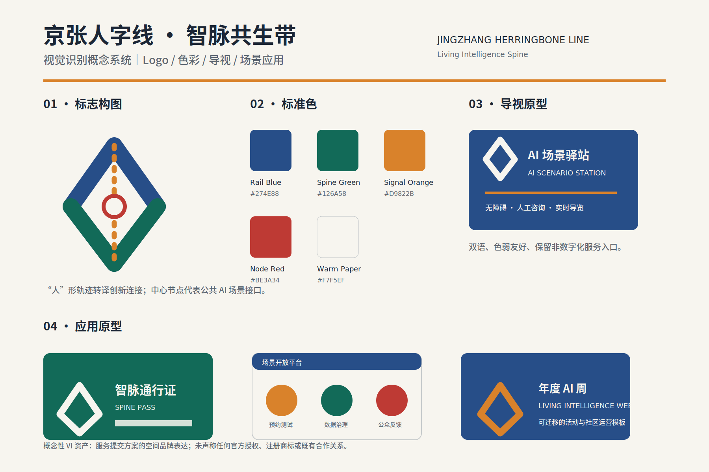
全球案例只作为机制参考，不构成已确认合作、项目背书或权利授权。前述多伦多、首尔与新加坡三项已登记于 sources.json 与 report/narrative.md；每项均提供发布主体、可点击来源、时间信息、可迁移机制和使用边界 来源 来源 来源。
伦敦、前海与涩谷三项同样作为可核验的机制比较。方案不复制其照片、标志、图纸、仪表盘或受版权保护的全文 来源 来源 来源。
| 案例 | 发布主体、资料与时间 | 可迁移机制 | 许可与适用性边界 |
|---|---|---|---|
| 多伦多 Quayside | Waterfront Toronto 项目页；2026-08-12 核验。 | 公共领域统筹、竞争性开发伙伴与步行滨水空间的协同。 | 仅链接和原创概括；不使用网页渲染图、Logo 或数据。 |
| 首尔智慧城市与数字化 | 首尔特别市政府《Smart City & Digitization Master Plan (2021–2025)》；2026-08-12 核验。 | 公共利益、包容、网络安全与公众参与的治理原则。 | 不是 DMC 的项目复刻；首尔市版权保留，未复制视觉素材。 |
| 新加坡榜鹅数字园区 | JTC Corporation；网页更新 2026-01-14。 | 产学邻近、社区融合、园区运行数据平台与低碳出行。 | 仅作机制比较；不传播 JTC 图纸或图片。 |
| 伦敦 Knowledge Quarter | University College London；2024–2025 仪表盘资料。 | 多机构协作网络与研究/产业两类可解释绩效看板。 | UCL/Elsevier 对 findings 要求署名；本包不再分发数据或截图。 |
| 深圳前海深港合作区 | 深圳市商务局；2024-08-08。 | 跨区域制度、交通与生态接口协同。 | 页面明确未经书面授权不得转载；仅事实概括，不表示前海合作。 |
| 东京涩谷 Stream | Tokyo Convention & Visitors Bureau；2025-12-11。 | 轨道遗址再开发、河岸步行空间、广场和多用途设施缝合。 | 图片有版权标记；不复制图像、标志或设计图。 |
案例的“适用性”是本方案对机制的原创判断，须结合海淀正式边界、法规、产权、公众参与和专业团队意见再验证 深度 深度。
AI全栈自主创新体系
针对“建设适配 AI 新质生产力的新型城市形态”与“全栈自主创新”要求 标准，方案围绕“芯片—框架—模型—数据—应用—治理”全栈链条组织空间与设施：在众智园布置自主算力与模型训练评测基地、数据合规流通节点与标准治理展示空间；在中部与原点社区布置开源协作、成果转化与人才服务设施；在大钟寺布置大模型原生应用、智能终端与数据要素流通的城市服务界面。空间上以 104 幢概念建筑基底表达研发、实验、孵化、办公、教育与配套功能，建筑类型遵循 enums/building_types.json 枚举 空间数据 深度。
全栈创新不是“全部自建”，而是分层开放的协同体系：算力层依托分布式能源与端侧算力节点 空间数据；框架与模型层通过开源社区、标准共建与安全治理沙盒协作；数据层以合规、授权、可审计为前提；应用层由 12 张 AI 场景卡承载。强度与形态控制待官方控规条件确认，本方案不编造容积率、高度与密度数值 指标 指标；相关深度项见 深度 与 深度。
AI 创新生态、人才画像与 AI+ 场景
AI 创新生态围绕“全栈自主、世界级生态、场景赋能”组织空间与设施；人才画像面向开源开发者、初创团队、头部企业访客、周边居民与高校师生五类人群，把差异化需求转译为可定位的空间响应；AI+ 场景沿主脊与两翼布置，形成产业发展场景与 AI 赋能城市功能场景两大类型 标准 深度。本节给出用户画像与场景卡清单，并把每个场景落到公共空间、绿地与道路图层 空间数据 空间数据 空间数据；数量由场景卡与画像指标核对 指标 指标。
AI+场景赋能新范式
AI+ 场景围绕公告提出的交通、服务、消费、医疗、教育、法律、生活服务等方向展开，形成产业发展场景与 AI 赋能城市功能场景两大类，全部落到空间与治理边界：公共空间场景引用公共空间图层 空间数据，慢行与交通场景引用道路图层 空间数据，开放空间场景引用绿地图层 空间数据 与比例指标 指标 指标。每个场景说明服务对象、空间位置、数据来源、隐私边界、人工复核机制与运营主体；面向智能体任务书要求不少于 10 张场景卡，本方案给出 12 张 指标。
以下三个 AI 产业测试验证场景为概念性试点卡，不是已经接入的数据系统、已获批的道路测试或政府承诺。阈值为试点评估建议，正式启动前须由主管部门、运营方和数据主体共同确认数据合法性、信息安全、无障碍与人工复核流程 深度 深度。
| 验证场景 | 数据输入与最小化边界 | TRL / 测试指标 | 空间组件 | 建议运营方 | 退出条件与人工兜底 |
|---|---|---|---|---|---|
| 自动驾驶慢行导航测试 | 经授权的高精地图、匿名化人流与路况；不采集可识别面部或连续个人轨迹。 | TRL 6；导航建议准确率目标 ≥95%，端到端提示延迟目标 ≤200ms。 | 京张遗址公园主脊慢行道，约 8 km 的概念服务范围。 | 场景运营方、交通管理协同方、无障碍代表。 | 未达标、投诉异常或安全事件即暂停自动提示；切换为静态导视、人工咨询和现场巡查。 |
| AI 公共空间智能维护 | 设施状态传感、经脱敏/裁剪的巡检图像、人工报修单；不作居民画像。 | TRL 5；故障发现率目标 ≥90%，维护响应目标 ≤30 分钟。 | 清河滨水公园、站前广场与 AI 场景驿站。 | 园林、市政维护方、场地运营方。 | 成本超预算、误报率不可接受或设备维护负担过高时缩小布设；人工巡检保持为主流程。 |
| 数据合规流通沙盒 | 已脱敏训练样本、授权清单、不可篡改审计日志；不接入未授权真实生产数据。 | TRL 4；零已确认泄露事件、审计完整率目标 100%。 | 众智园数据合规流通节点（概念性室内/服务空间）。 | 数据控制者、安全治理团队、独立合规复核方。 | 法规、授权目的或安全基线变化时冻结处理、导出审计记录并人工复核；不得以自动化系统替代法律判断。 |
| 用户画像 | 典型需求 | 空间响应 | 自检边界 |
|---|---|---|---|
| 开源开发者 | 发布、协作、测试、社区声誉 | 原点社区开源发布厅、公共代码墙、夜间协作空间 | 不采集个人行为轨迹；活动数据只做聚合统计 |
| 初创团队 | 低成本办公、算力入口、产品试验场 | 众智园共享测试场、端侧算力服务点、标准治理咨询 | 算力和数据服务需另行授权 |
| 头部企业访客 | 展示、商务、国际接待、人才招聘 | 大钟寺国际路演客厅、轨道站点接驳、重点企业周边公共空间 | 企业标识和案例须清权 |
| 周边居民 | 通勤、休闲、社区服务、低扰动更新 | 京张遗址公园慢行环、社区服务嵌入、夜间照明和活动分级 | 不将居民画像用于商业推荐 |
| 高校师生 | 成果转化、跨校协作、日常慢行 | 校区-园区慢行缝合、成果转化驿站、AI 教育体验点 | 校园数据和科研成果需授权 |
| 场景卡 | 空间载体 | 设计说明 |
|---|---|---|
| 01 开源发布厅 | 北京AI原点社区 | 面向高校、开源社区和初创团队，提供成果发布、代码贡献展示和小型路演空间 |
| 02 安全治理沙盒 | 众智园 | 将标准制定、安全评测、模型红队测试转译为可参观、可预约、可监管的展示和协作节点 |
| 03 端侧算力驿站 | 总体设计范围节点 | 与公共服务、企业服务和低碳能源策略结合，作为待深化的新型基础设施原型 |
| 04 AI慢行导航 | 京张遗址公园活力带 | 用可解释导视和低侵入传感帮助识别慢行断点、拥挤节点和无障碍需求 |
| 05 大钟寺国际路演客厅 | 大钟寺AI产业聚集区 | 服务智能体、智能终端和内容消费企业的展示、洽谈、媒体发布和国际交流 |
| 06 清河低碳创新廊 | 众智园临清河界面 | 把绿色空间、雨洪、步行骑行和 AI 展示结合，作为园区公共客厅 |
| 07 近校成果转化街 | 北京AI原点社区 | 面向高校成果转化，组织孵化、展示、法务、知识产权和投融资服务 |
| 08 数据要素会客厅 | 大钟寺片区 | 以合规、授权、可审计为前提，展示数据要素和数字资产流通的城市服务界面 |
| 09 AI生活服务样板街 | 社区与商业交汇处 | 将医疗、教育、法律、生活服务等 AI+ 场景落到可运营的小尺度街区空间 |
| 10 全球AI活动周路线 | 一带公共空间系统 | 形成从遗址文化、开源社区、产业展示到国际路演的可步行、可传播体验路线 |
| 11 原点朝圣广场 | 北京AI原点社区 | 以人字顶点广场为朝圣地标，承载纪念、发布与公共艺术 |
| 12 大钟寺站城客厅 | 大钟寺站前 | 站城一体化的接驳、商业、会展与数字体验复合空间 |
AI 场景卡与画像共 12 张与 5 类 指标 指标，全部进入结构化图层或合规矩阵，便于评审者看到它们与产业、空间和公共利益之间的关系。agent 生成的 AI 治理建议遵守数据最小化、公开来源、可解释和人工复核原则：城市智能体可辅助识别慢行断点、公共空间热力、设施维护、企业服务需求和活动安全风险，但不能替代规划审批、不能输出未经授权的个人画像、不能声称获得官方实施承诺 深度 来源。
V3 评委首读规则：遗产—服务—治理四重转换
V3 将“京张人字线”从视觉母题进一步转译为可审查的公共服务规则：任何被称为 AI 公共服务节点的空间，均须同时给出 遗产解释、非数字替代、最小数据与人工责任 四项条件。遗产解释优先于装饰性科技符号；纸质导览、静态标识和人工咨询保证不使用数字设备的访客仍能获得基本信息；任何数字功能仅处理达到目的所必需的非个人化输入；现场人员、专业责任和法定标识优先于算法建议。缺少其中任一条件时，节点只应作为一般公共空间讨论，不应被包装为“已部署的智慧场景”。
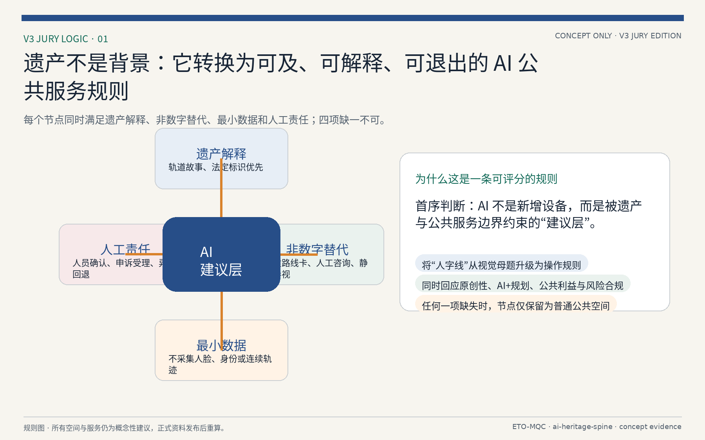
V3 的主场景是“遗址慢行导航与 AI 场景驿站”的低风险概念原型，而非自动驾驶、公共监控或真实数据系统。访客可在纸质卡、双语导视、人工咨询或可选数字界面之间选择“少台阶、遮荫、历史解释、亲子休息”等导览偏好；数字建议只可读取经人工核验的公共设施状态，不能采集人脸、身份或连续个人轨迹。临时封闭、安全提示与路线开放均由人员和现场标识最终确认；数据过期、投诉异常或安全事件发生时，数字建议必须关闭，并回退为静态导视、人工咨询和现场巡查。该场景只定义服务和治理边界，不声称准确率、响应时间、真实采集能力或已经获批的部署状态 深度。
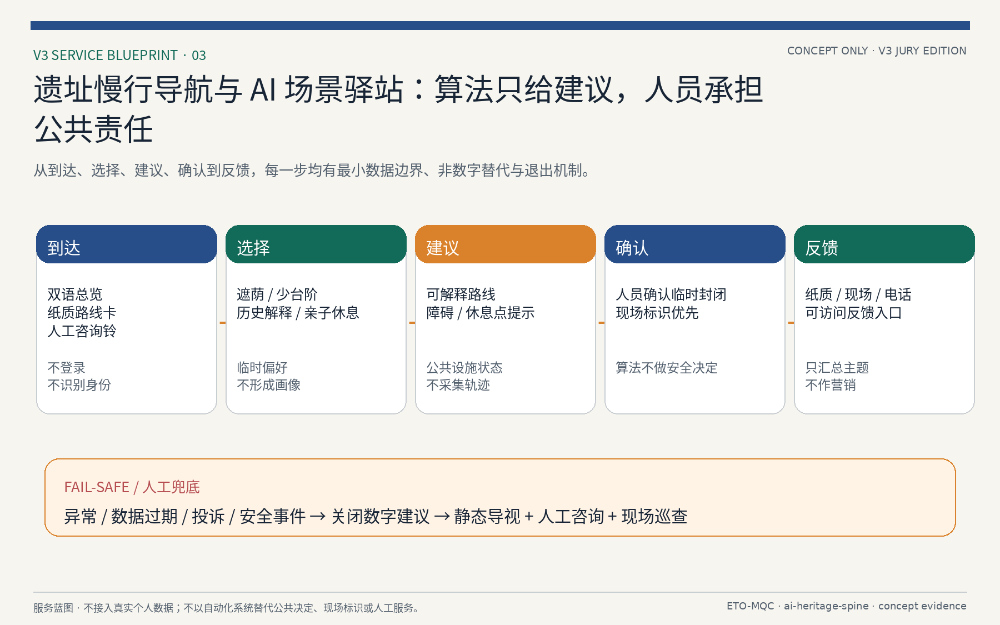
总体设计范围城市更新与控规深度城市设计
总体设计范围要求达到控制性详细规划的城市设计深度 标准。方案提出城市更新总体空间结构、低效空间识别、更新项目清单、实施政策建议、产业功能比例、空间组织模式、建筑总规模和综合承载能力评估。geometry/land_use.geojson 完整覆盖设计边界且无缝隙 空间数据 深度，geometry/buildings.geojson 表达 104 幢概念建筑基底 空间数据 指标，geometry/roads.geojson 表达微循环、慢行与轨道接驳关系 空间数据 指标，metrics.json 复算核心面积与比例 深度。
控规深度内容拆成可审查对象：用地结构、建筑基底、交通组织、绿地与公共空间比例、分期范围与 AI 场景节点。涉及建筑高度、开发强度、道路红线、退线和设施标准的内容，若尚无官方控制条件，应写为“待正式控规条件确认”，不得以 agent 推测值冒充审定指标 指标 指标；相关深度项见 深度 与 深度。
总体设计必须支撑交通、轨道、市政与配套设施。方案围绕轨道站点一体化、道路微循环、非机动车停放、停车供给、创新服务平台、人才生活服务、新型基础设施、分布式能源和端侧算力提出空间布局和实施路径 深度 深度；同时以 geometry/phasing.geojson 表达三期实施范围 空间数据 指标 深度。
重点区域详细设计
重点区域详细设计是必选项 标准。三处重点区域分别在 geometry/key_areas.geojson 中作为 provisional_constraint 表达，总面积约 369 公顷 空间数据 空间数据 空间数据；数量与面积由指标核对 指标 指标，由 深度 检查是否达到规划综合实施方案深度。HTML 页面可切换查看三处重点区域，A3 文册与 A0 展板包含重点片区总图、局部详图与指标说明。
| 重点片区 | 设计定位 | 空间动作 | AI产业与运营场景 | 证据引用 |
|---|---|---|---|---|
| 众智园AI自主创新加速区 | 花园型全栈自主创新街区 | 强化清河界面、产业展示、低碳创新交往和对外交通组织；以绿色空间承载开放测试与标准治理展示 | 自主模型测试、标准制定工作坊、安全治理展示、低碳算力体验 | 空间数据、深度 |
| 北京AI原点社区 | 近校型成果转化与人才社区 | 组织校区、园区、街区慢行缝合；补足成果发布、人才服务、居住生活和开源协作空间 | 开源社区、成果发布、人才特区服务、近校孵化 | 空间数据、来源 |
| 大钟寺AI产业聚集区 | 城市型智能经济与国际交往街区 | 围绕大钟寺站一体化、四象限步行连通、商业服务和重点企业公共环境更新 | 智能体与智能终端展示、内容消费、数据要素与国际路演 | 空间数据、指标 |
重点区域详细设计：众智园AI自主创新加速区
定位为“全栈自主 · 治理话语权”的花园型加速区，约 192 公顷 空间数据。空间动作包括：强化清河沿岸低碳创新廊 空间数据、布置自主模型训练评测与安全治理展示空间、以绿色空间承载开放测试与标准共建工作坊、组织对外交通与站城接驳。功能业态以科研用地为主，辅以产业服务与配套 空间数据 深度。运营场景包括自主模型测试、标准制定工作坊、安全治理展示与低碳算力体验，均以场景卡与合规矩阵落位 指标 深度。实施依赖包括河道蓝线、生态与防洪条件，需官方控规与权属数据确认 深度。
重点区域详细设计：北京AI原点社区
定位为“世界级生态 · 人才原点”的近校型成果转化与人才社区，约 104 公顷 空间数据。围绕人字顶点布置 AI 原点纪念广场 空间数据，组织校区、园区、街区慢行缝合 空间数据，补足成果发布、人才服务、居住生活与开源协作空间。功能业态混合科研、教育、文化、居住与公共服务 空间数据 空间数据。运营场景包括开源社区、成果发布、人才特区服务与近校孵化。实施依赖包括校区边界、权属与首层业态，需官方数据确认 深度。
重点区域详细设计：大钟寺AI产业聚集区
定位为“智能原生新业态 · 国际交往”的城市型智能经济街区，约 72 公顷 空间数据。围绕大钟寺站一体化开发，组织四象限步行连通 空间数据 空间数据，布局智能体与智能终端展示、内容消费、数据要素会客厅与国际路演客厅。功能业态以商业服务业为主，辅以规划绿地复合利用 空间数据 空间数据。实施依赖包括轨道站点、道路交叉口与市政管线，需官方数据确认 深度。
三区两翼联动与空间结构
“三区两翼联动”是本方案将 AI 生态转化为空间结构的关键命题 标准：三处重点区（众智园、AI原点社区、大钟寺）承担差异化的创新功能，两翼（中关村科技服务翼、小月河场景赋能翼）分别承接产业服务与公共场景，形成“人字线”主脊上的功能互补与资源循环。空间结构上，主脊（京张遗址公园AI创新中轴）贯通南北 空间数据，西翼沿中关村方向展开科技服务与研发协作节点，东翼沿小月河方向展开场景赋能与生活服务节点 空间数据。
联动机制落实为三条工作线：产业联动（高校策源—成果转化—企业应用）、空间联动（公园主脊缝合两翼与三站）、服务联动（公共服务设施沿站与沿脊两级布置）。三处重点区以慢行与轨道站点接驳连接 空间数据 指标，其功能分工、空间动作与实施依赖已在前述重点区表格中给出；本节点负责把“两翼”与“三站”纳入统一空间结构表述，并由 overall_spatial_structure 深度项检查 深度。两翼与三站之间的公共服务设施配置遵循 TOD 优先原则，详见“交通、轨道、市政与公共服务设施”章节 深度。
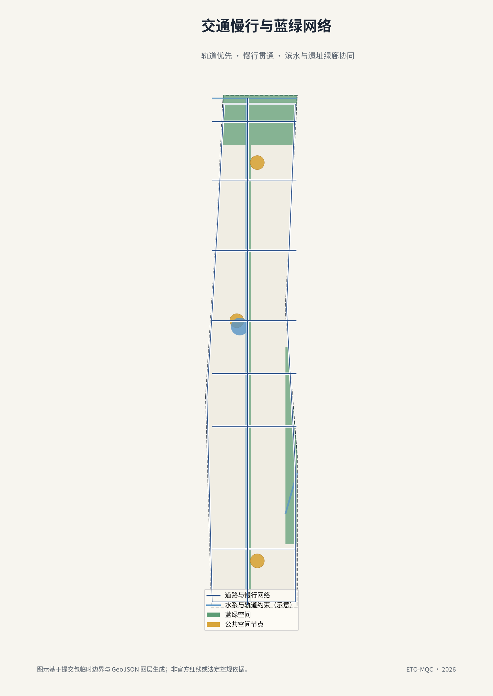
智能化AI活力城市
“智能化AI活力城市”关注 AI 如何让城市更高效、更温暖、更有生命力 来源。方案把智能化落实到三层可运营空间：一是公共服务层，AI 辅助政务服务、公共安全（以安全治理展示与人工复核为前提）、教育医疗和生活服务，全部作为“AI 场景卡”落到具体节点 空间数据 指标；二是产业服务层，AI 支持企业服务、知识产权、投融资与人才服务，落到众智园与原点社区的创新服务设施 空间数据 空间数据；三是公共空间层，AI 支持慢行导航、公共空间热力与设施维护，落到公园主脊与慢行系统 空间数据 空间数据。
活力城市的判断标准是“可运营、可体验、可迭代”：每个 AI 场景都有空间载体、服务对象、数据边界、人工复核与运营主体，避免“贴标式智能化”。面向居民的 AI 服务应满足数据最小化、可解释与人工复核原则；面向企业的 AI 服务以合规、授权、可审计为前提；面向治理的 AI 服务用于识别慢行断点、设施维护与活动安全风险，不替代规划审批与公共决策 深度。方案未声称任何 AI 服务已获政府实施承诺，所有场景均为设计建议，需经专业团队与主管部门深化确认。
AI治理与全球话语权
面向“AI 治理与全球话语权”任务 标准，方案把治理能力转译为可展示、可协作、可监管的空间与制度载体：在众智园布置安全治理沙盒与标准共建空间，在原点社区布置开源协作与成果发布空间，在大钟寺布置数据要素会客厅与国际路演空间 空间数据 空间数据 空间数据。这些空间服务“制度型开放”与“话语权建设”目标：通过标准制定、安全评测、模型红队测试、开源社区与全球活动展示中国 AI 治理方案，增强国际影响力与规则参与能力。
方案同时明确治理边界：AI 治理建议不构成法律意见或政府决策，涉及人脸识别、公共监控、个人数据使用等事项必须以现行法律法规、公开政策与授权为准 来源 深度。AI 治理基础设施（评测、沙盒、标准）的选址与规模均基于临时边界与公开资料提出，待官方边界与正式规划条件发布后复核。所有“全球AI活动周路线”“国际路演”“朝圣路线”等表述均为概念建议或参考方案，不视为已确定的政府活动与实施安排。
用地、建筑规模与拆改留方案
用地布局以 geometry/land_use.geojson 为机器可读底板，在设计边界内按栅格切分形成无缝隙分区，遵循 enums/land_use_codes.json 的土地用途分类，按科研、商业服务业、教育、文化、绿地与广场等功能组织 空间数据 空间数据 空间数据；用地布局深度见 深度。
建筑规模以 104 幢概念建筑基底表达，总建筑基底面积约 869,111 平方米 空间数据 指标，建筑类型遵循 enums/building_types.json。由于建筑容积率、总建筑面积、建筑高度与密度均无官方控规数据支撑，方案不以推测值编制正式建筑规模指标，待官方条件发布后复算 指标 指标 指标；相关深度项见 深度 与 深度。
拆改留方案遵循“现状保留优先、低扰动更新”原则 深度：优先保留京张遗址公园、清河沿岸绿地、轨道遗址与历史遗存 空间数据 空间数据 空间数据；以建筑基底图层表达“保留/改造/新建”的示例分类，实际拆改以产权、权属与实施条件为准，本方案仅作空间示意 空间数据 深度。更新项目清单与分期实施详见对应章节，用地与建筑规模结论全部回写 metrics.json，确保指标复算可追溯 深度。
交通、轨道、市政与公共服务设施
交通组织以“轨道优先、慢行优先、路网分层”为原则：依托轨道站点形成 TOD 节点，组织轨道、公交、步行与骑行无缝接驳；道路按主干路、次干路、支路与慢行优先路径分层，重点打通京张遗址公园主脊的东西向慢行断点 空间数据 空间数据 指标；交通与慢行深度见 深度。
三处重点区分别围绕大钟寺站、原点社区站与园区枢纽组织站城一体化与换乘服务 空间数据 空间数据 空间数据。慢行系统沿主脊与两翼展开，串联 8 处 AI 场景驿站与三处朝圣地标 空间数据 指标。
市政与公共服务设施按 TOD 优先、两级布置：片区级设施沿站点集中设置，社区级设施嵌入居住与产业组团 深度。新型基础设施（端侧算力、智能灯杆、智慧环卫、能源与再生水）作为待深化原型提出，需与市政管网、电力与通信专项规划衔接 深度。轨道线位、站点与高压廊道以约束图层为准，方案不改变既有轨道红线与市政廊道 空间数据 空间数据 空间数据。所有交通与市政结论均基于临时边界与公开资料，待官方正式数据复核 深度。
蓝绿空间、公共空间与城市风貌
蓝绿空间以京张遗址公园为南北主脊，串联清河、小月河滨水空间与沿线公园绿地，形成“一脊两翼、蓝绿交织”的开放空间骨架 空间数据 空间数据 空间数据；绿地占比由指标核对 指标。
公共空间按“节点—轴线—场地”组织：轨道站点站前广场、AI 场景驿站与三处朝圣地标构成公共活动节点，主脊慢行系统构成公共轴线，公园绿地与广场构成开放场地 空间数据 空间数据 空间数据；公共空间占比由指标核对 指标，深度项见 深度。公共空间强调可达、连续、无障碍与全龄友好，节点之间以慢行路径连通。
| 公共空间组件库 | 核心配置 | 数据与运营边界 |
|---|---|---|
| AI 场景驿站 | 双语导视、可预约试验台、人工咨询、无障碍坐席、纸质导览和低功耗信息屏。 | 实时信息是可选服务；断网时以纸质、静态牌和人工咨询保障基本使用。 |
| 遗址慢行廊 | 轨道遗迹观察带、连续遮荫、骑行停靠、夜间低照度导向、雨洪花园。 | 不改变文保或轨道安全边界；夜景与传感设备先经文保、交通和电力专项核验。 |
| 站前共享客厅 | 雨棚、等候座椅、无障碍坡道、可移动展台、儿童/照护者设施。 | 站区消防、客流组织、无障碍与广告许可为前置条件。 |
| 社区微更新口袋 | 休息、健身、亲子、社区公告、非数字化服务点。 | 由社区共创决定内容；不得把居民画像用于营销或自动化决定。 |
| 地标目录 | 空间位置与形态 | 荣誉与展示体系 |
|---|---|---|
| AI 原点广场 | 北京 AI 原点社区的人字顶点公共广场；承载成果发布、公共艺术与纪念。 | 设“开源贡献、公共服务、无障碍共创”三类可更新展示；荣誉认定须透明规则和外部审核。 |
| 京张智脉桥/廊 | 遗址主脊上的轻量跨接与观景节点（概念）。 | 展示铁路史、修复过程与开放数据方法；不替代历史文物说明牌。 |
| 大钟寺站城客厅 | 大钟寺站前的换乘、会展、数字体验复合节点。 | 展示企业与高校成果时，需获得名称、Logo、作品与个人信息授权。 |
历史资源系统以“识别—分级—保护—活化—解释—监测”六步组织：第一，官方文保、铁路遗存、既有树木、水系及口述记忆应在入场前完成清单与权属核验；第二，依据保护等级和敏感性划定不可触碰、低扰动更新、可解释利用三类界面；第三，采用轨道蓝、主脊绿、信号橙和原点红构成中英双语导视，但不覆盖法定文保标识；第四，以“看得见铁轨、记得住历史、感受得到未来”为国际传播文案的概念方向，内容必须由史料核验、翻译审核和权利清理后发布。上述系统为设计框架，不替代文物认定或法定保护要求 空间数据 深度。
城市风貌以“百年京张与 AI 未来共生”为主题：保留遗址公园与轨道历史意象，鼓励研发与创新建筑采用人字线屋顶与轨道肌理母题，控制临轨、临水与遗址界面高度与退线，营造“看得见铁轨、记得住历史、感受得到未来”的场所氛围 深度 深度。风貌控制细则（色彩、材质、屋顶形式、店招与夜景）作为待深化设计指引提出，具体以正式城市设计与控规条件为准；涉及历史建筑与文保单位处，方案仅表达“保留与活化”意向，不改变其保护要求 空间数据 深度。
V3 概念性遗址慢行锚点与用户旅程
为使总体策略能够接受独立评审，V3 从主脊中抽取一段 约 800 m 的概念性工作带，而不是新增法定线位、产权界线或工程放样。工作带以北端“历史解释/人工咨询”、中段“遮荫/无障碍休息”、南端“场景驿站/回退导视”三类节点演示空间—服务—治理的最小闭环。它必须先经空间/文保、数据、运营和公众四类条件复核，才可能进入后续专业论证；在任何条件缺失时，方案只保留纸质导览和人工服务建议 空间数据 深度。
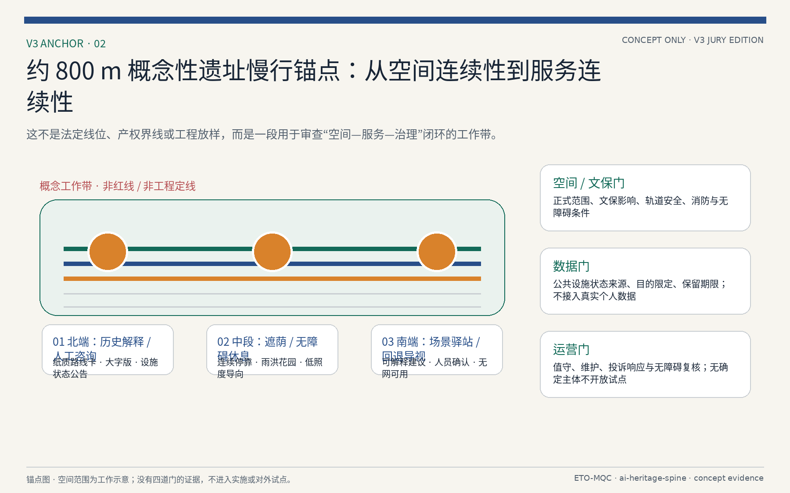
包容性不以抽象人群标签结束，而以可完成的服务旅程检验。老年使用者应可在不使用手机的情况下获得大字版路线、坐席和人工指引；视障或行动不便者应能识别连续无障碍路径、替代路线和风险提示；数字排斥使用者拒绝任何数据输入后，仍应获得与数字用户不劣的基本信息。上述是待共创和专业无障碍核验的设计假设，并不替代现场测试或法定设施验收 深度。
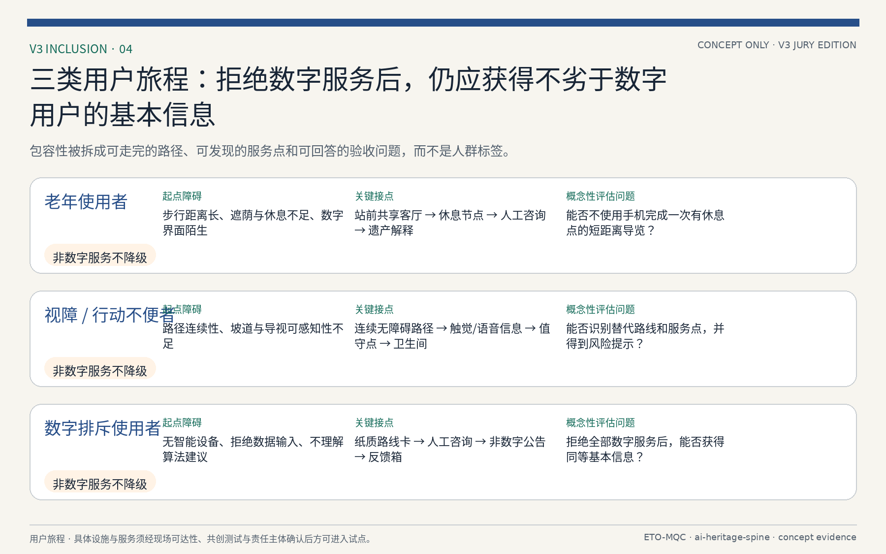
更新项目清单、实施政策与分期计划
更新项目清单以 8 个更新项目为载体，覆盖三处重点区与主脊关键节点，包括众智园产业提质、原点社区缝合更新、大钟寺站城一体化、遗址公园贯通、清河滨水更新、小月河场景节点、主脊慢行贯通与社区服务补短板 指标 深度。每个项目说明更新目标、空间范围、功能业态与实施依赖，并映射到 geometry/phasing.geojson 的分期图层 空间数据 空间数据 空间数据；分期面积由指标核对 指标，深度项见 深度。
实施政策建议围绕“留改拆并重、多元主体协同、分期滚动实施”展开：提出土地与权属建议、更新组织模式、投资模式与产业准入建议、分期实施时序与监测评估机制。分期计划分三期：一期（近期）聚焦站点周边与已建成公园段落，二期（中期）推进主脊贯通与重点区更新，三期（远期）完善两翼与整体风貌 空间数据 指标。政策与分期建议均以公开资料为基础提出，不构成政府实施承诺，具体以主管部门意见为准 深度。
项目级实施矩阵如下，每个更新项目标注实施主体类型、依赖数据、试点周期、成本级别、KPI 与退出条件：众智园产业提质——实施主体为园区运营方与社会资本，依赖产权确认与产业准入标准，试点周期 2-3 年，成本级别中，KPI 为 AI 企业入驻率与产业产值，退出条件为产业准入不达标时调整业态；原点社区缝合更新——实施主体为街道与社区共建平台，依赖社区调查与权属摸底，试点周期 1-2 年，成本级别低，KPI 为社区满意度与公共空间使用率，退出条件为居民参与率不足时重新组织；大钟寺站城一体化——实施主体为轨道集团与属地政府，依赖轨道接口与控规条件，试点周期 3-5 年，成本级别高，KPI 为站点客流与换乘效率，退出条件为控规未批复时暂缓；遗址公园贯通——实施主体为园林与文物部门，依赖文保范围与管线迁改，试点周期 2-4 年，成本级别中，KPI 为贯通率与遗产保护评分，退出条件为文保冲突时调整线位；清河滨水更新——实施主体为水务与属地政府，依赖防洪与水质数据，试点周期 2-3 年，成本级别中，KPI 为水质达标率与亲水岸线长度，退出条件为防洪标准不满足时调整方案；小月河场景节点——实施主体为场景运营方，依赖场景清单与数据接口，试点周期 1-2 年，成本级别低，KPI 为场景活跃度与用户满意度，退出条件为场景不达标时更换；主脊慢行贯通——实施主体为交通与园林部门，依赖轨道接口与用地条件，试点周期 2-3 年，成本级别中，KPI 为慢行连通率与骑行量，退出条件为用地冲突时调整路由；社区服务补短板——实施主体为街道与社区，依赖社区调查与人口数据，试点周期 1-2 年，成本级别低，KPI 为服务覆盖率与居民满意度，退出条件为需求不足时调整配置 深度 深度。
区域协作方面，本方案作为概念提案不预设行政协调，但明确协作接口类型与建议属性：与北纬社区（清河站周边）共享慢行接驳与公共空间数据，协作类型为数据共享与空间接口；与未来科学城（昌平）在 AI 算力与人才培训方面互认标准，协作类型为标准互认与人才流动；与怀柔科学城在基础研究与大装置数据方面建立联合接口，协作类型为数据联合与研究协作；与经开区在智能制造与成果转化方面形成产业梯度，协作类型为产业梯度与成果转化；与京津冀城市群在人才流动、算力调度与应用场景方面提出建议接口，协作类型为人才流动与算力共享。上述协作均为建议属性，不构成已确认合作协议，具体以主管部门与合作方意见为准 深度 来源。
年度活动、开发者社区与品牌资产采取“公共议题优先、可审计开放、权利清晰、可退出”的运营建议，而非预设的政府活动计划。
| 运营模块 | 年度节奏与产出 | 开放与治理条件 | 招引与转化路径 |
|---|---|---|---|
| 智脉 AI 周（概念） | 每年一次；成果发布、公众体验、无障碍共创日与国际传播内容包。 | 公开征集规则、无障碍方案、活动安全预案、合作方名称与 Logo 授权。 | 从高校/社区议题征集到场景展示，再到合规的试点对接；不承诺补贴或入驻资格。 |
| 开发者社区 | 月度技术分享、季度开源维护日、年度公共问题挑战。 | 遵守开源许可证、知识产权归属、行为准则和未成年人保护；对个人数据实行最小化。 | 以可复用工具、开源贡献和问题验证形成作品集，再由授权主体对接孵化、培训或采购流程。 |
| 场景开放运营 | 以“提交—风险筛查—小范围沙盒—独立复盘—扩展或退出”五步运行。 | 数据分类、目的限定、人工复核、公众申诉、网络安全和采购/审批前置。 | 只有通过安全、公共利益和可行性复盘的原型才可进入进一步专业论证。 |
| 品牌资产治理 | 季度资产盘点、年度使用审计与可访问性检查；统一 Logo、色彩、语调和来源标注。 | 资产权利人、许可期限、翻译责任、合作方使用范围和撤回机制均需登记。 | 允许授权合作方在明确范围内使用概念标识；未经书面授权不得衍生注册、商业背书或数据营销。 |
包容性设计方面，公共空间强调全龄友好与无障碍：儿童活动空间沿主脊慢行系统设置安全游乐节点，配置适龄设施与监护视线；老年服务设施在社区级公共服务中嵌入日间照料、健康监测与慢行辅助，站点周边设置无障碍坡道与休息座椅；残障人士通道覆盖全脊慢行系统，配置盲道、语音导航与无障碍卫生间；数字困难群体保留人工服务窗口、纸质导览与现场咨询，不依赖智能设备作为唯一服务渠道；照护者空间在公共节点设置哺乳室与亲子卫生间。上述需求以设计假设形式提出，待本地调查与公开统计数据验证 深度 指标。
V3 决策门：可暂停、可复盘、可退出
V3 不把分期写成线性的“落地承诺”，而采用四道决策门和三阶段建议。空间/文保门要求正式范围、文保影响、轨道安全、消防和无障碍条件；数据门要求公共设施状态来源、目的限定、控制责任与保留期限；运营门要求值守、维护、投诉响应和无障碍复核；公众门要求与老年、残障及数字排斥使用者共同检验。责任均以“规划/文保/交通/无障碍专业复核”“数据控制与安全复核”“场地运营与社区服务”等类型表达，避免虚构已确认合作方。没有任一门的证据时，不得进入施工、真实数据采集或对外试点；应暂停、回到纸质和人工服务，或在补证后重新讨论 深度 深度。
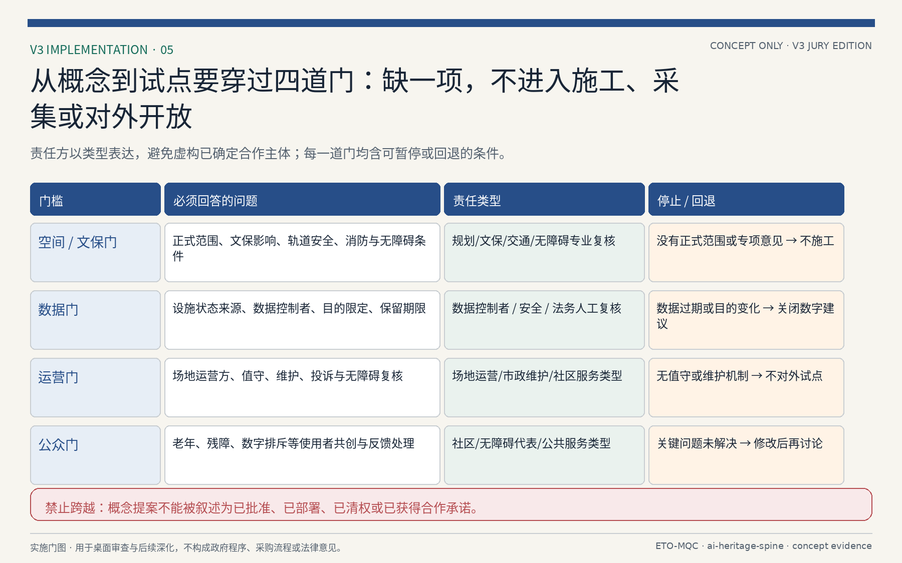
指标体系、面积复算与合规矩阵
指标体系由 metrics.json 输出并通过图形核对，共 17 项指标，全部在 EPSG:4548 下从几何图层复算，保证“指标—图层—图纸—HTML—文册—展板”一致 深度：
| 指标 | 数值 | 来源图层/说明 |
|---|---|---|
| 场地面积 site_area_sqm | 11,412,825 | 空间数据，provisional boundary |
| 重点区面积 key_detailed_design_area_sqm | 3,692,893 | 空间数据 等三区之和 |
| 重点区数量 key_area_count | 3 | 空间数据 |
| 绿地率 green_ratio | 19.76% | 空间数据 |
| 公共空间占比 public_space_ratio | 1.13% | 空间数据 |
| 建筑基底面积 building_footprint_area_sqm | 869,111 | 空间数据 |
| 道路中心线长度 road_centerline_length_m | 39,357 | 空间数据 |
| 分期面积 phasing_area_sqm | 4,246,442 | 空间数据 |
| 场景卡/画像/朝圣/更新项目数量 | 12 / 5 / 3 / 8 | 结构化表格落位 |
面积复算遵循“临时边界优先、官方数据优先校准”原则：所有面积基于 provisional boundary polygon 在 EPSG:4548 下计算，并保留精度警示；官方边界与重点区 polygon 发布后必须整包复算，禁止只改数字不动图层 来源 深度 指标。建筑容积率、高度与密度因无官方数据标注 unknown，不用于正式规模承诺 指标 指标 指标。
合规矩阵保存在 compliance_matrix.json，将公告 1.3.1–1.5.3 与 agent.1–agent.6 的每一条要求映射到章节、图层、指标、图纸与 HTML 证据 标准 标准 标准，专业标准与深度规定见 标准 标准，形成可核对的覆盖关系；指标复算与数据缺口分别见 深度 与 深度。
设计深度由 design_depth_matrix.json 记录。空间与功能类深度项包括现状诊断、三层框架与总体结构 深度 深度 深度，用地布局见 深度；强度与形态见 深度 深度，拆改留与蓝绿公共空间见 深度 深度。
实施与机制类深度项包括交通市政与更新项目 深度 深度 深度，分期实施见 深度；指标复算与数据缺口分别在对应章节核对 深度 深度。
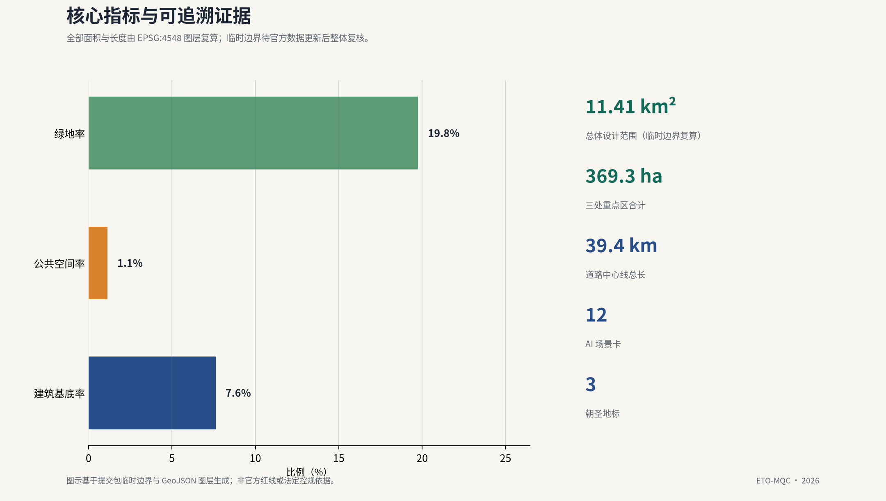
V3 首读册与评审导航
V3 新增中英文各 12 页的评委首读册：[drawings/jury-booklet.pdf](drawings/jury-booklet.pdf) 与 [drawings/jury-booklet.en.pdf](drawings/jury-booklet.en.pdf)。首读册并不替代原有 A0 展板、A3 技术文册、HTML、GeoJSON、指标表和矩阵；其作用是以“总判断—转换规则—最小锚点—服务蓝图—用户旅程—实施门—指标边界—下一步”的顺序，使评审者在独立阅读时能够回溯每一类判断。首读册中的所有图形都由包内几何、指标、原创概念图形和已登记的 VI 资产离线生成，不加载在线底图、地图瓦片、第三方照片、企业标识或音视频素材。
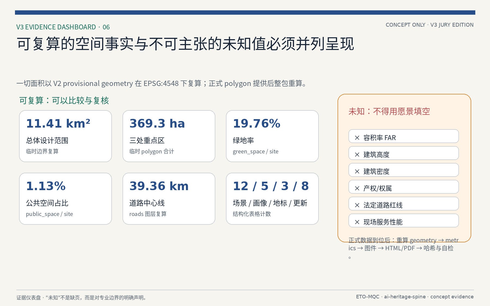
指标中可复算的场地面积、重点区面积、绿地率、公共空间占比、道路长度和结构化数量，仍以 V2 的 metrics.json 与 EPSG:4548 图层为唯一依据 指标。容积率、建筑高度、密度、产权、法定道路红线和现场服务性能仍保持 unknown 或待核验状态 指标 指标 指标。正式 polygon、控规、权属、专项或现场资料到位后，必须依次重算 geometry、metrics、图件、HTML/PDF、SHA-256 与四门自检，不能只在首读册或正文内替换单个数字。
风险、版权与合规说明
本方案基于临时边界与公开资料生成，存在以下主要风险：一是边界风险，provisional boundary 非官方红线，面积与空间结论在官方边界发布后需整包复算 来源 深度；二是数据风险，法定控规条件、产权权属、现状建筑与市政管线数据缺失，相关结论以临时/待确认标注 来源 深度；三是合规风险，AI 生成内容与治理建议不构成法律意见与政府决策，涉及个人数据与人脸识别等内容以现行法律法规为准；四是实施风险，更新项目与政策建议不构成实施承诺，需主管部门与专业团队确认 来源 深度。
版权与合规说明：本方案内容、命名与标识（“京张人字线”“智脉共生带”等）为 AI agent 概念提案，引用文献与公开资料均标注来源；标识、字体与图像须经清权后方可公开使用；本提交按 COMMUNITY-DISPLAY-ONLY 许可发布，供评审展示，不代表授权商业使用 来源。方案不包含个人身份信息、隐私数据与未授权内容；所有 AI 场景建议遵守数据最小化、可解释与人工复核原则。若发现所引资料与官方信息不一致，以官方最新发布为准 深度。
参考资料
本方案主要参考以下来源：场地资料包与事实包 来源 来源；边界与重点区资料 来源 来源；公告与任务书见 来源 来源；来源登记见 来源：
- 公开资料：征集公告、设计任务书、场地资料包与数据登记表，完整索引见
sources.json与brief/site-package/data/source_registry.json来源 来源。 - 场地数据：临时边界、重点区域、土地用途与建筑类型枚举、约束图层与源数据，见
geometry/与brief/site-package/enums/来源 来源。 - 专业标准：城市设计管理技术规定、控制性详细规划、国土空间用地分类指南、建筑工程设计文件编制深度规定，见
standard_matrix.json标准 标准；用地分类与设计深度见 标准 标准。 - 生成资料：AI 任务要求、事实包与缺失数据清单，见
data/与assumptions.json来源。 - 指标与合规：面积复算、指标表、合规矩阵与设计深度矩阵，见
metrics.json、compliance_matrix.json与design_depth_matrix.json深度 深度。